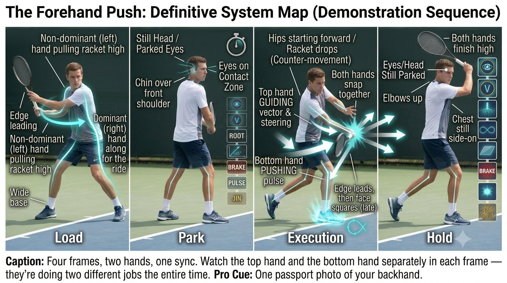
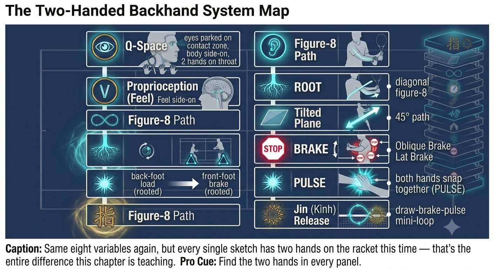
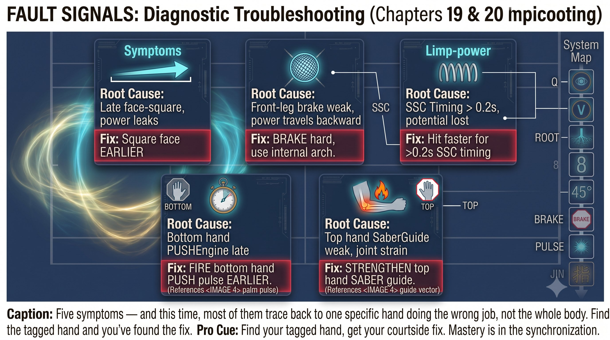

Chương 21: Backhand Hai Tay Dạng Lai
(Bản dịch tiếng Việt của Chapter 21 trong Sổ Tay Quần Vợt Thống Nhất)
BACKHAND HAI TAY
Push + Saber Lai
Tay chủ đạo đẩy giống như forehand. Tay không chủ đạo dẫn giống như saber. Lấy được ưu điểm của cả hai.
Tay chủ đạo là động cơ push. Tay không chủ đạo là người dẫn đường saber. Cùng nhau, chúng bù đắp cho điểm yếu của nhau.
— Henry Phạm

Hình 21.1
Bản Đồ Backhand Hai Tay Dạng Lai
Cú backhand hai tay kết hợp động cơ của push forehand với sự chính xác của saber.
Kiến Trúc Cầm Vợt
Tay dưới là cú forehand push. Tay trên là người dẫn đường saber. Chúng phải đồng thuận về góc mặt vợt.
— Henry Phạm
Quy Tắc
Tay dưới đẩy giống như forehand. Tay trên dẫn giống như saber. Để chúng đánh nhau và mặt vợt sẽ rung lắc.
Pha Nạp
– Mắt: theo dõi mềm, đầu di chuyển, VOR bật.
– Chân: một nền rộng, tư thế hơi mở. Chân trước bước hơi chéo qua. Cả hai chân đều thực trong chốc lát — nền rộng, rễ sâu.
– Thân người: một cú xoay toàn thân lớn. Tay không chủ đạo, đặt tại họng cán vợt, kéo vợt lùi lại — cảm nhận một độ căng chạy từ hông đến lưng xô đến cả hai vai.
– Vợt: cao phía sau bạn, cạnh vợt dẫn đầu, mặt vợt khép nhẹ. Tay không chủ đạo kéo; tay chủ đạo chỉ đơn giản đi theo.

Hình 21.2
Mẹo Huấn Luyện
Cú backhand hai tay tự thưởng cho bạn ở đây: tay không chủ đạo có thể kéo cây vợt vào đúng vị trí hoàn hảo trong khi tay chủ đạo chỉ đơn giản đi theo cho đến tiếp xúc. Hãy để tay không chủ đạo dẫn dắt vung nạp.
Pha Đỗ: Tại Lúc Bóng Nảy
– Đầu: dừng lại, vẫn nghiêng bên. Cằm trên vai trước — không bao giờ quay về phía lưới.
– Mắt: nhảy tới vùng tiếp xúc — lệch sang bên nhiều hơn và hơi cao hơn so với forehand. Khóa lại. Nói "đỗ".
– Bản thể cảm: cảm nhận cả hai tay cùng lúc — lòng bàn tay dưới ở phía sau vợt (push), cạnh bên ngón út của tay trên dẫn đầu (saber). Cả hai đường đều đã nạp.

Hình 21.3
Thực Thi: Đồng Bộ Hai Tay
– Fascia: hông bắt đầu tiến trong khi cây vợt vẫn đang rơi — sự nạp ngược này nạp lực cho cả hai đường.
– Tay đẩy (dưới): ngực bắn trước, lòng bàn tay đẩy xuyên qua bóng giống như forehand. 3/10 lên đến 6/10.
– Tay dẫn (trên): lưng xô kéo khuỷu tay xuống, cạnh vợt dẫn đầu, mặt vợt vuông góc lại ở khoảnh khắc cuối cùng. Giữ không đổi ở mức 4/10.
– Đồng bộ: tay dưới đẩy xuyên qua trong khi tay trên dẫn cạnh vợt — chúng đến cùng lúc tại điểm tiếp xúc.
– Phanh: ngực phanh trong khi giữ nghiêng bên, rễ của chân trước giữ vững. Cả hai tay cùng bật: tay dưới đẩy, tay trên dẫn.

Hình 21.4
Mẹo Huấn Luyện
Để tay trên chiếm quyền và bạn sẽ có một cú slice. Để tay dưới chiếm quyền và bạn sẽ có một cú phẳng. Chúng phải chia sẻ công việc. Bài tập: đánh các cú backhand hai tay chỉ bằng tay dưới, rồi chỉ bằng tay trên, rồi cả hai cùng lúc. Cảm nhận từng vai trò riêng biệt.
Pha Giữ
– Mắt và đầu: vẫn nghiêng bên. Cằm trên vai cho đến khi bóng qua lưới.
– Kết thúc: cả hai tay kết thúc ở vị trí cao, khuỷu tay lên cao, ngực vẫn nghiêng bên. Hướng mặt ra lưới lúc kết thúc nghĩa là đã mất sự đồng bộ.
Bản Đồ Hệ Thống Backhand Hai Tay
Hai Bàn Tay, Cạnh Nhau
Tín Hiệu Lỗi
Các Bài Tập: Tích Hợp Hai Bàn Tay
1. Chỉ tay dưới: đánh các cú backhand hai tay chỉ bằng tay dưới (tay trên rời khỏi vợt). Cảm nhận động cơ push. 20 quả bóng.
2. Chỉ tay trên: đánh chỉ bằng tay trên đặt tại họng cán vợt. Cảm nhận người dẫn đường saber. 20 quả bóng.
3. Xen kẽ: một quả chỉ tay dưới, một quả chỉ tay trên, một quả cả hai tay. 30 quả bóng. Cảm nhận từng vai trò tách riêng, rồi hòa vào nhau.
4. Bài tập đồng bộ: đối tác nạp những quả bóng cao. Tập trung vào "dưới đẩy, trên dẫn." Nói to lên. 20 quả bóng.
Reset Trước Điểm (Phiên Bản Hai Tay)
1. Chân xuống đất: rộng, cả hai tripod đều hoạt động. Cảm nhận sự xé giữa hai chân.
2. Đầu về nghiêng bên: cằm trên vai trước, tay không chủ đạo đặt tại họng cán vợt.
3. Tay về đúng vai trò: dưới là push (3/10). Trên là dẫn (không đổi ở mức 4/10).
Nguyên Lý Cốt Lõi
Backhand hai tay bằng động cơ push cộng người dẫn đường saber. Tay dưới cung cấp tốc độ. Tay trên cung cấp sự kiểm soát. Chúng phải đến tiếp xúc cùng lúc, với một ý định chung.
Danh Sách Kiểm Tra Backhand Hai Tay
CƠ MÔNG. LƯNG XÔ. CẢ HAI TAY. ĐẦU NGHIÊNG BÊN. MẮT ĐỖ. ĐẨY CỘNG DẪN.
– Trước điểm: nền rộng, cả hai tripod, tay không chủ đạo tại họng cán vợt, vai trò rõ ràng.
– Nạp: một cú xoay toàn thân lớn, tay không chủ đạo kéo vợt lùi, cảm nhận độ căng hông-đến-lưng xô ở cả hai bên.
– Đỗ: đầu dừng ở nghiêng bên, cằm trên vai. Mắt nhảy tới vùng tiếp xúc 30cm phía trước/bên, nói "đỗ".
– Thực thi: hông khởi động, tay dưới đẩy xuyên qua, tay trên dẫn cạnh vợt, chúng đến cùng lúc.
– Giữ: mắt và đầu vẫn nghiêng bên. Cằm trên vai cho đến khi bóng qua lưới.
– Bóng bay rộng nghĩa là tay trên đã mở mặt vợt. Bóng vào lưới nghĩa là tay dưới đã không đẩy xuyên qua.
Chương Này Dẫn Đến Đâu
Chương này tích hợp Q-V-ROOT-8-45-Impulse-Kình vào backhand hai tay dạng lai. Chương 22 bao quát cú giao bóng. Chương 23 bao quát cú đỡ giao bóng. Chương 24 bao quát vô-lê và cú đập.